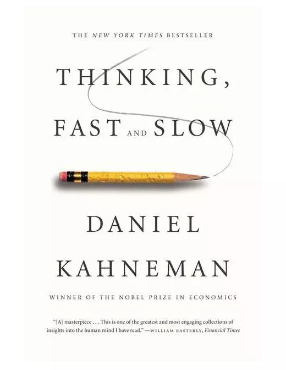
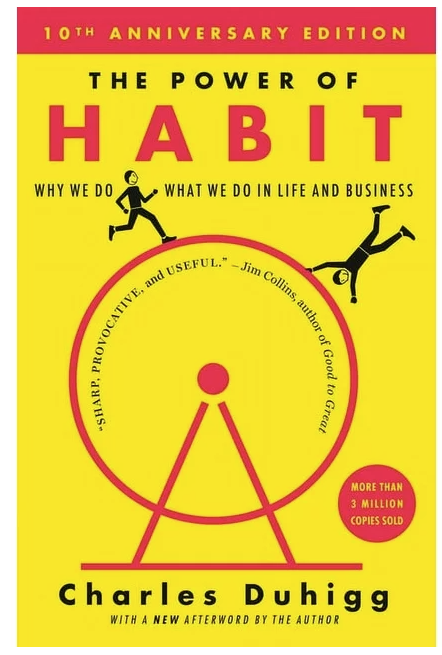
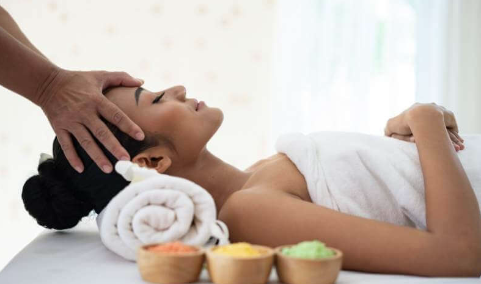

I have always enjoyed reading at young age. Reading is hobby that stimulates and sharpens my mind. Books have the capability to widen my horizons, enabling me to explore different cultures from around the world. Moreover, non fiction books ensures that I am well equipped with the knowledge of theories, literature and other global events and occurrences that will gain a great deal of knowledge. Reading (especially genres like fantasy, thriller and mystery) help me get a more creative imagination.Being creative definitely helps me in many areas of life that require problem solving. When I am in need of motivation when studying or working on a project – reading self-help books can help you stay motivated. Sometimes, these books aren’t just about motivation but they help me with your challenges that stop you from staying motivated for long periods .The last 2 books that I have read recently is The Power of Habits - Why we do what we do in life and business by Charles Duhigg and it taught me that he Golden rule of habit change helps stop addictive habits and replace them with new ones. It states that if you keep the initial cue, replace the routine, and keep the reward, change will eventually occur, although individuals who do not believe in what they are doing will likely fall short of the expectations and give up. It tremendoulsy helped me change my habits and adopting new healthy habits. The other books that I am reading is Thinking Fast and Slow by Daniel Kahneman and it absolutely challenged my way of thinking. The book's main thesis is a differentiation between two modes of thought: "System 1" is fast, instinctive and emotional; "System 2" is slower, more deliberative, and more logical.The book delineates rational and non-rational motivations or triggers associated with each type of thinking process, and how they complement each other, starting with Kahneman's own research on loss aversion. From framing choices to people's tendency to replace a difficult question with one which is easy to answer, the book summarizes several decades of research to suggest that people have too much confidence in human judgment.
 I fully understand that I am my own biggest investment and self-care to me is not a luxury but a necessity. It is important to me to make sure I take good care of your body, mind, and soul every day. Learning how to eat right, reduce stress, exercise regularly, and take a time-out when I need it are touchstones of my self-care routine to stay healthy, happy, and resilient. One of my main self-care outlet is working out.Daily exercise helps me both physically and mentally, boosting my mood and reducing stress and anxiety, not to mention helping you shed extra weight.It also helps me push my mental strenghten when I finish my workouts in spite of my emotions and tiredness.Of course, it is hard to go to the gym every day, so I try to incorporate other exercises, such as walking, tennis, which may be able to fit into your schedule more easily. I also do not slack on my massages and spa treatmentMassage is part of integrative medicine. Medical centers often offer it with standard treatment. It can be used for a wide range of medical conditions. Studies of massage benefits have found massage can: Help reduce stress, Lessen pain and muscle tightness, Increase relaxation, Improve the work of the immune system.
